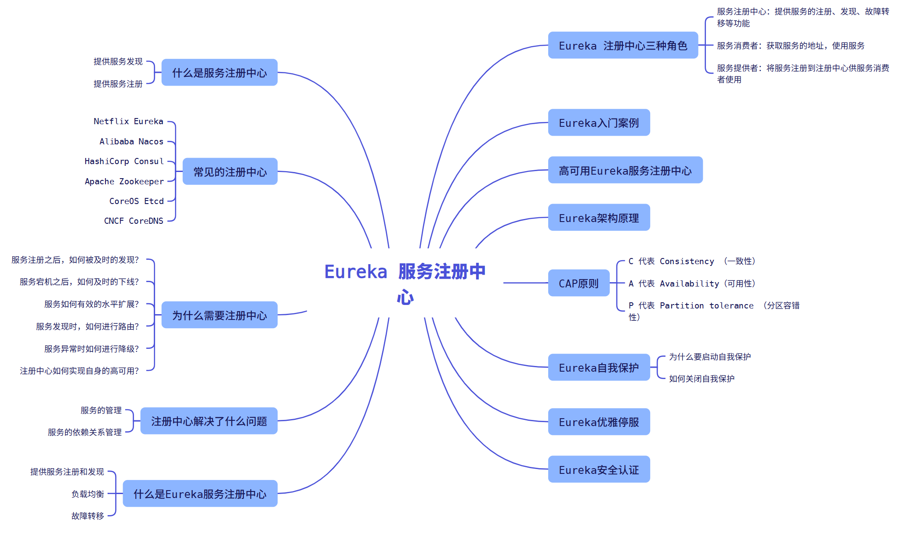

Spring Cloud Eureka 注册中心

第1章 什么是服务注册中心
注册中心可以说是微服务架构中的 “通讯录” ，它记录了服务和服务地址的一个映射关系。在分布式系统架构当中，服务会注册到这里，当某一个服务需要调用其他服务时，就需要到注册中心中去找到对应服务的地址，进行调用。
举一个显示生活中的例子，比如说，我们手机中通讯录的两个使用场景：
- 服务发现： 当我想给法外狂徒张三打电话时，我们就需要在通讯录中按照名字去找到张三，然后找到他的手机号码进行拨号；
- 服务注册： 有一天武大办了新的手机号码并告诉我们，我们将武大的电话号码存进通讯录，后续我们就可以通过通讯录去找到他；
总结： 服务注册中心的作用就是服务的注册和服务的发现。
第2章 常见的注册中心
我们来了解下市面上常见的注册中心有哪些：
- Netflix Eureka
- Alibaba Nacos
- HashiCorp Consul
- Apache Zookeeper
- CoreOS Etcd
- CNCF CoreDNS
他们之间的区别如下表所示：
| 特性 | Eureka | Nacos | Consul | Zookeeper |
|---|---|---|---|---|
| CAP | AP | CP + AP | CP | CP |
| 健康检查 | Client Beat | TCP / HTTP / MySQL / Client Beat | TCP / HTTP / gRPC / Cmd | Keep Alive |
| 雪崩保护 | ✅ | ✅ | ❌ | ❌ |
| 自动注销实例 | ✅ | ✅ | ❌ | ✅ |
| 访问协议 | HTTP | HTTP / DNS | HTTP / DNS | TCP |
| 监听支持 | ✅ | ✅ | ✅ | ✅ |
| 多数据中心 | ✅ | ✅ | ✅ | ❌ |
| 跨注册中心同步 | ❌ | ✅ | ✅ | ❌ |
| Spring Cloud集成 | ✅ | ✅ | ✅ | ✅ |
CAP 解释：
- C 代表 Consistency （一致性）
- A 代表 Availability（可用性）
- P 代表 Partition tolerance （分区容错性）
CAP 定理由 Eric Brewer 在 2000 年 PODC 会议上提出。该猜想在提出后两年被证明成立，成为我们熟知的 CAP 定理，CAP三者不可兼得。
第3章 为什么需要注册中心
在分布式系统当中，我们不仅仅是需要在注册中心找到服务和服务地址的映射关系这么简单，我们还需要考虑更为复杂的问题：
- 服务注册之后，如何被及时的发现？
- 服务宕机之后，如何及时的下线？
- 服务如何有效的水平扩展？
- 服务发现时，如何进行路由？
- 服务异常时如何进行降级？
- 注册中心如何实现自身的高可用？
这些问题的解决都依赖于注册中心。简单看，注册中心的功能可能类似DNS服务器或者负载均衡器。实际上，注册中心作为微服务的基础组件，可能会更加的复杂，也需要更多的灵活性和时效性。因此，我们需要学习更多的Spring Cloud微服务组件去协同完成应用开发。
第4章 注册中心解决了什么问题
注册中心主要解决了以下两个问题：
- 服务的管理
- 服务的依赖关系管理
第5章 什么是Eureka服务注册中心
Eureka 是 Netflix 开发的服务发现组件，本身是一个基于REST的服务。Spring Cloud 将它集成在其子项目Spring Cloud Netflix中，实现Spring Cloud的服务注册和发现，同时还提供了负载均衡、故障转移等能力。
第6章 Eureka 注册中心三种角色

以下对上面三种角色做个简单的介绍：
- 服务注册中心：提供服务的注册、发现、故障转移等功能；
- 服务消费者：获取服务的地址，使用服务；
- 服务提供者：将服务注册到注册中心供服务消费者使用；
Eureka Server
通过Register、Get、Renew等接口提供服务的注册和发现。
Service Provider
服务提供方，将自身的服务实例注册到Eureka Server中。
Service Consumer
服务调用方，通过Eureka Server获取服务列表，消费服务。

具体的步骤解释：
- 实例化服务
- 将服务注册到注册中心
- xx1-service 127.0.0.1:8080
- xx2-service 127.0.0.1:8080
- 从服务注册中心获取服务列表
- 基于负载均衡算法从列表选择一个服务地址进行服务调用
- 定期发送心跳
- 检查没有定期发送心跳的服务并在一定的时间内剔除服务地址列表
第7章 Eureka入门案例
创建项目
我们创建一个微服务的聚合项目来简单说说Eureka，首先创建一个pom父工程。你可以选择使用IDEA创建，也可以使用STS创建，但是我个人比较喜欢使用网页创建，我们使用阿里的创建地址 https://start.aliyun.com/，也可以使用Spring 官方地址创建 https://start.spring.io/。

在创建 Spring Cloud 项目之前，我们需要稍微去注意下Spring Boot、Spring Cloud、Spring Cloud Alibaba三者之间的版本兼容性问题。
服务注册中心
- 创建子项目 eureka-server

- 添加pom依赖
xxxxxxxxxx41<dependency>2 <groupId>org.springframework.cloud</groupId>3 <artifactId>spring-cloud-starter-netflix-eureka-server</artifactId>4</dependency>- 配置文件修改
xxxxxxxxxx301server2 port87653spring4 application5 namebettytsai-eureka6 profiles7 activedev8
9# Eureka配置10eureka11 instance12 # 主机名（如果可以在配置时确定）（否则将从 OS 原语中猜测）。13 hostnamebettytsai-eureka14 # 标志表示，在猜测主机名时，应优先使用服务器的 IP 地址，而不是操作系统报告的主机名。15 prefer-ip-addressfalse16 client17 # 指示此客户端是否应从 eureka 服务器获取 eureka 注册表信息。18 fetch-registryfalse19 # 指示此实例是否应将其信息注册到 eureka 服务器以供其他人发现。在某些情况下，您不希望发现您的实例，而您只想发现其他实例。20 register-with-eurekafalse21 # 将可用区映射到用于与 eureka 服务器通信的完全限定 URL 列表。22 # 每个值可以是单个 URL 或逗号分隔的备用位置列表。通常，eureka 服务器 URL 携带协议、主机、端口、上下文和版本信息（如果有）。23 # 示例：https:ec2-256-156-243-129.compute-1.amazonaws.com:7001/eureka24 # 更改在运行时在 eurekaServiceUrlPollIntervalSeconds 指定的下一个服务 url 刷新周期生效。25 # 可以理解为注册中心对外暴露的注册地址26 service-url27 defaultZonehttp//$eureka.instance.hostname$server.port/eureka/28 server29 # 心跳检测30 enable-self-preservationfalse- 启动类修改，添加
@EnableEurekaServer注解
xxxxxxxxxx111public class EurekaServerApplication {5 public static void main(String[] args) {6 ApplicationContext context = SpringApplication.run(EurekaServerApplication.class, args);7 Environment environment = context.getEnvironment();8 String port = environment.getProperty("server.port");9 log.info(String.format(":::Eureka注册中心启动成功....端口号::: %s",port));10 }11}- 启动eureka-server，通过
http://127.0.0.1:8765/访问即可。

看到这里，我们的服务注册中心就成功启动了，入门案例就结束啦。
第8章 高可用Eureka服务注册中心
注册中心 （Eureka Server）
创建项目
我们由于没有服务器，暂时就只能本地进行项目的搭建和主从服务 的搭建，所以我们还是基于上一章节《Eureka入门案例》当中的项目继续拓展。再继续搭建一个从注册中心服务 去进行演示，具体配置基本同主注册中心服务 ，不一样的地方就是主从配置问题。
但如果是多机器部署我们完全可以不需要去修改端口，通过IP去区分即可，但我们现在是基于一台机器去做演示效果，所以我们还是准备复制一个新的注册中心。

正如上图所示，我们在项目中新建了一个 bettytsai-eureka-slave 从服务，你可能发现和《Eureka入门案例》中的项目名不一样，别担心，我只是为了区分新建的注册中心，改了个名字。
添加依赖
还是同 bettytsai-eureka-master 模块一样，项目依赖没有变化。
xxxxxxxxxx41<dependency>2 <groupId>org.springframework.cloud</groupId>3 <artifactId>spring-cloud-starter-netflix-eureka-server</artifactId>4</dependency>配置文件
为了更好的区分主服务和从服务之间的区别，我们还是借助下工具给大家看看二者配置的区别：
- 配置文件 application.yml 的区别

- 配置文件 application-eureka-dev.yml 的区别

从配置上看到，主从注册中心需要去进行相互注册，这里需要注意的就是系统Host映射配置：
xxxxxxxxxx41# 若是多机器部署，建议eureka.instance.hostname保持一致2# 这里我区分主要是担心混淆初学者认知3127.0.0.1 bettytsai-eureka-slave4127.0.0.1 bettytsai-eureka-master启动服务
在上面我们也看到了一些配置信息，现在我们打开eureka服务看看具体情况。

可以看到，无论是访问主服务还是从服务，我们在注册列表中都能看到两个eureka服务实例，可见我们的eureka集群部署成功了。
IP +端口注册
我们可以看到注册的eureka实例，都是操作系统原语注册：

一个普通的Netflix Eureka实例注册的ID等于其主机名（即：每个主机仅提供一项服务）。Spring Cloud Eureka提供了合理的默认值，定义如下：
xxxxxxxxxx11${spring.cloud.client.hostname}:${spring.application.name}:${spring.application.instance_id:${server.port}}也就是:
xxxxxxxxxx11主机名:应用名:端口我们也可以自定义进行修改：
xxxxxxxxxx91eureka2 instance3 # 主机名（如果可以在配置时确定）（否则将从 OS 原语中猜测）。4 hostnamebettytsai-eureka5 # 标志表示，在猜测主机名时，应优先使用服务器的 IP 地址，而不是操作系统报告的主机名。6 # 可以理解为是否使用IP地址注册7 prefer-ip-addresstrue8 # 实例id9 instance-id$spring.cloud.client.ip-address$server.port重新启动服务之后，实例ID就变成了IP+端口的方式注册：

服务提供者（Service Provider）
创建项目
在上一节当中，我们创建了一个高可用的Eureka服务集群，不知道是否还记得在第六章的时候，我们曾经说过，Eureka中心的三种角色：
- 服务注册中心
- 服务提供者
- 服务消费者
现在我们看看怎么样去搭建服务提供者，还是在原有的案例中添加新的模块，我们命名为：bettytsai-system。

添加依赖
与服务注册中心不一样的是，针对服务提供者和消费者，所使用的依赖如下所示。
xxxxxxxxxx51<dependency>2 <groupId>org.springframework.cloud</groupId>3 <artifactId>spring-cloud-starter-netflix-eureka-client</artifactId>4</dependency>5<!--...其余依赖不作展示-->若控制台报错情况如下，请添加以下依赖解决，报错大致为：
xxxxxxxxxx11Caused by: java.lang.NoClassDefFoundError: javax/inject/Provider修复依赖:
xxxxxxxxxx41<dependency>2 <groupId>javax.inject</groupId>3 <artifactId>javax.inject</artifactId>4</dependency>配置文件
服务提供者的配置和注册中心的配置大差不差，基本都差不多，具体如下。
xxxxxxxxxx281eureka2 client3 # 指示此客户端是否应从 eureka 服务器获取 eureka 注册表信息。4 fetch-registrytrue5 # 指示此实例是否应将其信息注册到 eureka 服务器以供其他人发现。在某些情况下，您不希望发现您的实例，而您只想发现其他实例。6 register-with-eurekatrue7 # 指示从 eureka 服务器获取注册表信息的频率（以秒为单位）。8 registry-fetch-interval-seconds309 # 将可用区映射到用于与 eureka 服务器通信的完全限定 URL 列表。10 # 每个值可以是单个 URL 或逗号分隔的备用位置列表。11 # 通常，eureka 服务器 URL 携带协议、主机、端口、上下文和版本信息（如果有）。12 # 示例：https://ec2-256-156-243-129.compute-1.amazonaws.com:7001/eureka/13 # 更改在运行时在 eurekaServiceUrlPollIntervalSeconds 指定的下一个服务 url 刷新周期生效。14 service-url15 defaultZone16http://bettytsai-eureka:8761/eureka17http://bettytsai-eureka:8762/eureka18 instance19 # 标志表示，在猜测主机名时，应优先使用服务器的 IP 地址，而不是操作系统报告的主机名。20 prefer-ip-addresstrue21 # 获取要向 eureka 注册的此实例的唯一 ID（在 appName 范围内）22 instance-id$spring.cloud.client.ip-address$server.port23 # 指示 eureka 客户端需要向 eureka 服务器发送心跳以指示它仍然处于活动状态的频率（以秒为单位）。24 # 如果在 leaseExpirationDurationInSeconds 中指定的时间段内未收到心跳，则 eureka 服务器将从其视图中删除该实例，25 # 从而禁止流向此实例的流量。请注意，如果实例实现 HealthCheckCallback，然后决定使自身不可用，则实例仍然无法获取流量。26 lease-renewal-interval-in-seconds1027 # 必须与Docker容器名保持一致28 hostname$spring.application.name需要稍微注意的是，我们在上面配置了集群注册中心，所以我们服务提供者需要在 eureka.client.service-url.defaultZone 中列举所有的注册中心，可以以 , 分割，也可以如上配置。
编写服务
鉴于初学者可能没有相关ORM框架的经验，所以我们这里不去演示相关的JDBC操作。编写一个虚假的测试服务去演示微服务的功能，让读者更加集中精力去学习微服务的组件。部分代码如下所示：
xxxxxxxxxx91(value = "/system/test")3public class TestController {4
5 (value = "/getDefaultString")6 public String getDefaultString() {7 return "hello eureka! I'm system.";8 }9}注解说明
我们已经知道在服务注册中心搭建的时候，我们在启动类中添加了 @EnableEurekaServer 注解。需要简单的提一嘴，就是在服务提供者和消费者来说，我们不没有强制要求说添加 @EnableEurekaClient 注解。
在SpringBoot当中，有一个默认的约定大于配置 说法，也就是在我们的依赖中，如果引入了 spring-cloud-starter-netflix-eureka-client 依赖，它就会认为我们肯定是想要去注册服务，默认会打开 @EnableEurekaClient 注解功能。但为了代码的可读性，建议添加上该注解。
xxxxxxxxxx171import lombok.extern.slf4j.Slf4j;2import org.springframework.boot.SpringApplication;3import org.springframework.boot.autoconfigure.SpringBootApplication;4import org.springframework.cloud.netflix.eureka.EnableEurekaClient;5import org.springframework.context.ApplicationContext;6import org.springframework.core.env.Environment;7public class SystemApplication {11 public static void main(String[] args) {12 ApplicationContext context = SpringApplication.run(SystemApplication.class, args);13 Environment environment = context.getEnvironment();14 String port = environment.getProperty("server.port");15 log.info(String.format(":::系统启动成功....端口号::: %s",port));16 }17}启动服务
编写完测试服务之后，我们依次启动注册中心，服务提供者，打开注册中心服务页看到我们的服务提供者已经注册进注册中心了。

验证服务
页面访问服务地址，验证我们的服务是否成功启动。

服务消费者（Service Consumer）
创建项目
搭建好服务提供者之后，接下来我们再继续搭建我们的服务消费者 bettytsai-test 模块，同样还是借助我们的入门案例，大致项目如下。

添加依赖
同样的步骤，我们还是添加相应的依赖。
xxxxxxxxxx41<dependency>2 <groupId>org.springframework.cloud</groupId>3 <artifactId>spring-cloud-starter-netflix-eureka-client</artifactId>4</dependency>配置文件
配置文件基本和服务提供者一样。
xxxxxxxxxx281eureka2 client3 # 指示此客户端是否应从 eureka 服务器获取 eureka 注册表信息。4 fetch-registrytrue5 # 指示此实例是否应将其信息注册到 eureka 服务器以供其他人发现。在某些情况下，您不希望发现您的实例，而您只想发现其他实例。6 register-with-eurekatrue7 # 指示从 eureka 服务器获取注册表信息的频率（以秒为单位）。8 registry-fetch-interval-seconds309 # 将可用区映射到用于与 eureka 服务器通信的完全限定 URL 列表。10 # 每个值可以是单个 URL 或逗号分隔的备用位置列表。11 # 通常，eureka 服务器 URL 携带协议、主机、端口、上下文和版本信息（如果有）。12 # 示例：https://ec2-256-156-243-129.compute-1.amazonaws.com:7001/eureka/13 # 更改在运行时在 eurekaServiceUrlPollIntervalSeconds 指定的下一个服务 url 刷新周期生效。14 service-url15 defaultZone16http://bettytsai-eureka:8761/eureka17http://bettytsai-eureka:8762/eureka18 instance19 # 标志表示，在猜测主机名时，应优先使用服务器的 IP 地址，而不是操作系统报告的主机名。20 prefer-ip-addresstrue21 # 获取要向 eureka 注册的此实例的唯一 ID（在 appName 范围内）22 instance-id$spring.cloud.client.ip-address$server.port23 # 指示 eureka 客户端需要向 eureka 服务器发送心跳以指示它仍然处于活动状态的频率（以秒为单位）。24 # 如果在 leaseExpirationDurationInSeconds 中指定的时间段内未收到心跳，则 eureka 服务器将从其视图中删除该实例，25 # 从而禁止流向此实例的流量。请注意，如果实例实现 HealthCheckCallback，然后决定使自身不可用，则实例仍然无法获取流量。26 lease-renewal-interval-in-seconds1027 # 必须与Docker容器名保持一致28 hostname$spring.application.name编写服务
我们还是编写一个测试服务去验证消费者模块是否正常。
xxxxxxxxxx151(value = "/test/test")3public class DemoController {4
5 (value = "/test")6 public String get_test() {7 return "GET:: Hello World!";8 }9
10 (value = "/test")11 public String post_test() {12 return "POST:: Hello World!";13 }14
15}启动服务
然后启动我们的服务消费者模块，打开eureka注册中心页面，可以看到也同样注册进注册中心了。

验证服务
同样的我们验证下消费者服务是否可用。

服务调用
为了让初学者更好的理解提供者和消费者之间的调用关系，那么我们的消费者还有必要注册进注册中心吗？ 没必要。
所以我们需要调整配置文件：
xxxxxxxxxx41eureka2 client3 # 不注册进注册中心，服务消费者只拉取服务，不提供服务4 register-with-eurekafalse这样再注册中心页面中我们将看不到相关的实例列表。
那我我们究竟怎么样才能让消费者去远程调用服务提供者提供的服务呢，以下有三种方案：
- DiscoveryClient 通过元数据获取服务信息
- LoadBalancerClient 通过Ribbon的负载均衡器实现
- @LoadBalanced 通过注解开启Ribbon负载均衡器
接下来，我们针对下面三种方案进行详细的分析。
DiscoveryClient
Spring Boot不提供任何自动配置的 RestTemplate Bean实例，所以需要在项目中自行注入 RestTemplate 实例。在此之前，我们需要稍微改造下服务提供者，大致结果如下。

然后我们改造服务消费者模块，首先我们需要注入 RestTemplate 实例。
xxxxxxxxxx71public class RestConfig {3 4 public RestTemplate restTemplate(){5 return new RestTemplate();6 }7}然后通过 RestTemplate 调用 bettytsai-system模块提供的服务。
xxxxxxxxxx301(value = "/test/test")3(WarningsConstants.SPRING_JAVA_AUTOWIRED_FIELDS_WARNING_INSPECTION)4public class DemoController {5
6 7 private RestTemplate restTemplate;8
9 10 private DiscoveryClient discoveryClient;11
12 (value = "/test")13 public String getTest() {14 // 获取eureka server服务列表15 List<String> services = discoveryClient.getServices();16 ExceptionUtil.throwException(CollUtil.isEmpty(services), "未能找到任何服务!");17 // 根据服务名称获取服务18 String serviceName = "bettytsai-system";19 List<ServiceInstance> instances = discoveryClient.getInstances(serviceName);20 ExceptionUtil.throwException(CollUtil.isEmpty(instances), String.format("未能找到任何名称为%s的服务实例!", serviceName));21 // 获取服务实例22 ServiceInstance instance = instances.get(0);23 String url = "http://" + instance.getHost() + ":" + instance.getPort() + "/system/test/getDefaultString";24 // 调用服务接口，ResponseEntity封装了返回数据25 ResponseEntity<String> response = restTemplate.exchange(url, HttpMethod.GET, null,26 new ParameterizedTypeReference<String>() {}27 );28 return response.getBody();29 }30}最后，我们启动消费者，验证下服务是否成功调用。

LoadBalancerClient
接下来我们继续看看通过 LoadBalancerClient 负载均衡器去获取服务列表并调用的实现方式。
xxxxxxxxxx251(value = "/test/test")3(WarningsConstants.SPRING_JAVA_AUTOWIRED_FIELDS_WARNING_INSPECTION)4public class DemoController {5 6 7 private RestTemplate restTemplate;8
9 10 private LoadBalancerClient loadBalancerClient;11
12 (value = "/test2")13 public String getTest() {14 // 根据服务名称获取服务15 String serviceName = "bettytsai-system";16 ServiceInstance instance = loadBalancerClient.choose(serviceName);17 ExceptionUtil.throwException(ObjectUtil.isNull(instance),"获取服务实例失败!");18 // 调用服务接口，ResponseEntity封装了返回数据19 String url = "http://" + instance.getHost() + ":" + instance.getPort() + "/system/test/getDefaultString";20 ResponseEntity<String> response = restTemplate.exchange(url, HttpMethod.GET, null,21 new ParameterizedTypeReference<String>() {}22 );23 return response.getBody();24 }25}最后，我们启动消费者，验证下服务是否成功调用。

@LoadBalanced （推荐）
最后我们再看看通过 @LoadBalanced 注解的方式去启动负载均衡器获取服务列表并调用目标服务。
首先，我们需要在注入 RestTemplate 实例的时候，添加 @LoadBalanced 注解：
xxxxxxxxxx81public class RestConfig {3 4 5 public RestTemplate restTemplate(){6 return new RestTemplate();7 }8}然后，对应的 RestTemplate 实例也就有了负载均衡的能力。
xxxxxxxxxx191(value = "/test/test")3(WarningsConstants.SPRING_JAVA_AUTOWIRED_FIELDS_WARNING_INSPECTION)4public class DemoController {5 6 7 private RestTemplate restTemplate;8
9 (value = "/test3")10 public String getTest() {11 // 不再通过ip + port 调用了12 String serviceName = "bettytsai-system";13 String url = "http://" + serviceName + "/system/test/getDefaultString";14 ResponseEntity<String> response = restTemplate.exchange(url, HttpMethod.GET, null,15 new ParameterizedTypeReference<String>() {}16 );17 return response.getBody();18 }19}最后我们启动服务，验证下服务能否正常调用。

通过 @LoadBalanced 注解去启动负载均衡是最常用的方式，故比较推荐该方法。
第9章 Eureka架构原理

下面我们稍微解释下上图一些术语的含义：
- register - 服务注册 ：表示将自己的IP和端口注册进服务注册中心。
- renew - 服务续约 ：发送心跳包，每30s发送一次，告知eureka服务还存活者。如果90s仍未发送心跳，宕机。
- cancel - 服务下线 ：当Provider关闭之时向eureka发送消息，将自己从服务列表中删除。防止consumer调用到不存在的服务。
- get register - 获取服务列表 ：获取其他服务列表。
- replicate - 集群数据同步 ：eureka集群中的数据复制与同步。
- make pxote call - 远程调用 ：完成服务的远程调用。

第10章 CAP原则

CAP原则又称为CAP原理，指的是一个分布式系统中具有以下其中两个特性：
- C 代表 Consistency （一致性）
- A 代表 Availability（可用性）
- P 代表 Partition tolerance （分区容错性）
| 特性 | 定理 |
|---|---|
| Consistency | 也叫做数据原子性，系统在执行某项操作后处于一致的状态。在分布式系统中，更新操作执行成功后所有的用户都应该获取到最新的值，这样的系统被认为是具有强一致性的。等同于所有节点访问同一份最新的数据副本。 |
| Availability | 每一个操作总是能够在一定的时间内返回结果，这里需要注意的是“一定的时间内”和“返回结果”。 |
| Partition tolerance | 在网络分区的情况下，被分隔的节点仍然能够正常对外提供服务（分布式集群，数据被分布存储在不同的服务器上，无论什么情况，服务器都能够被正常访问）。 |
一致性
在微服务中的一致性就是无论我们的节点有多少个，我们在一个节点中最终拿到的数据，和其他节点的数据是一致的，我们需要保证这个数据在多个节点甚至说整个分布式集群当中是一致的。
可用性
可用性大致就是说我们需要去保证我们的服务保持一个高可用、高响应、高容灾性（不宕机）。
容错性
说到分区容错性，我们就不得不提一下IKF拆分原则，IKF（Inter-Kernel File System）拆分原则 主要关注于在多内核环境中高效管理和存储文件。以下是一些关键原则：
- 模块化设计 ：IKF采用模块化架构，将文件系统的不同功能（如存储、检索、权限管理等）拆分为独立模块，便于维护和扩展。
- 数据分片 ：将大文件分割成多个小片段进行存储，允许并行处理和传输，提高访问速度和存储效率。
- 去中心化存储 ：数据分散存储在多个内核上，避免单点故障，提高系统的可靠性和可用性。
- 一致性管理 ：通过一致性协议确保在多个内核之间的数据一致性，避免数据冲突和丢失。
- 动态扩展 ：支持动态添加或移除存储节点，系统能够根据负载自动调整资源分配，优化性能。
- 安全性与权限控制 ：实现细粒度的权限管理，确保只有授权用户能够访问特定数据，保护数据安全。
这些原则旨在提高IKF在多内核环境中的性能、可靠性和安全性。
🤓 为什么提到IKF拆分原则呢？
如果我们的集群实现了IKF拆分原则，就是我们就是需要获取多块区域的数据，那么为了获取多块区域的数据，我们就需要自己内部进行一些耗时操作，怎么保证服务的高可用？
这就是为什么满足CA的同时无法满足P的原因。
取舍策略
CAP三个特性只能满足其中两个，那么取舍的策略就共有三种：
- CA: 如果不要求P（不允许分区）则C（强一致性）和A（可用性）是可以保证的。但是放弃P的同时就意味着放弃了系统的扩展性，也就是分布式节点受限，没办法部署子节点，这是违背了分布式系统设计初衷的。
- CP: 如果不要求A （可用性），相当于每个请求都需要在服务器之间保持强一致性，而P（分区）会导致同步时间无限延长（也就是等待数据同步完成才能正常访问服务）。一旦发生网络故障或者信息丢失等情况，就要牺牲用户的体验，等待所有数据全部一致之后，再让用户访问系统。设计成CP的系统其实不少，典型的就是分布式数据库，如Redis、HBase等。对于这些分布式数据库来说，数据的一致性是最基本的要求，因为连这个都达不到，那么直接采用关系型数据库就好，没必要再浪费资源部署分布式数据库。
- AP: 要高可用并允许分区，则需要放弃一致性。一旦发生分区，节点之间可能失去联系，为了高可用，每个节点只能用本地数据提供服务，而这样会导致数据的不一致性。典型的就是某米的抢购手机场景，可能前几秒浏览商品的时候页面提示有库存，当你选择完商品准备下单的时候，系统提示你下单失效，商品售完。这其实就是先在A（可用性）方面保证系统可以正常的服务，然后在数据的一致性方面做了一些牺牲，虽然多少会影响用户体验，但也不至于造成用户购物流程的严重阻塞。
总结
现如今，对于多数大型互联网应用的场景，主机众多、部署分散，而且现在的集群规模越来越大，节点只会越来越多，所以节点故障、网络故障是常态，因此分区容错性就成为了一个分布式系统必然要面对的问题。那么就只能在C和A之间进行取舍。而对于传统项目就可能有所不同，对于银行转账系统来说，涉及到金钱的对于数据一致性不能做出一丝的让步，C必须保证，出现网络故障的话，宁可停止服务，可以在A和P之间进行取舍。
总而言之，没有最好的策略，好的系统应该根据业务场景进行架构设计，只有适合才是最好的。
第11章 Eureka自我保护
启动自我保护条件
一般情况下，服务在Eureka上注册之后，会每30s发送心跳包，Eureka通过心跳来判断服务是否健康，同时会定期删除超过90s没有发送心跳的服务。

有两种情况会导致Eureka Server收不到微服务的心跳
- 微服务自身的原因
- 微服务与Eureka之间的网络故障
自我保护模式
Eureka Server在运行期间会去统计心跳失败比例在15分钟之内是否低于85%，如果低于85%，Eureka Server会将这些实例保护起来，让这些实例不会过期，同时提示一个警告。这种算法叫做Eureka Server的自我保护模式。
这样就可以防止由于网络故障导致的Eureka短暂收不到心跳将服务删除。

为什么要启动自我保护
启动自我保护的原因有以下三种：
- 同时保留“好数据”与“坏数据”总比丢掉任何数据要好，当网络故障恢复之后，这个Eureka节点会退出自我保护模式
- Eureka还有客户端缓存功能（也就是微服务的缓存功能）。即使Eureka集群中所有节点都宕机失效，微服务的Provider和Consumer都正常通信。
- 微服务的负载均衡策略会自动剔除死亡的微服务节点。
如何关闭自我保护
注册中心配置自我保护模式：
xxxxxxxxxx61eureka2 server3 # 开启自我保护模式，心跳检测，生产环境建议打开4 enable-self-preservationtrue5 # 微服务清理间隔（单位：ms 默认：60 * 1000）6 eviction-interval-timer-in-ms60000第12章 Eureka优雅停服
配置了优雅停服之后，我们就不需要Eureka Server中配置关闭自我保护，我们通过actuator实现。
添加依赖
服务提供者添加actuator依赖：
xxxxxxxxxx41<dependency>2 <groupId>org.springframework.boot</groupId>3 <artifactId>spring-boot-starter-actuator</artifactId>4</dependency>配置文件
服务提供者配置度量指标监控与健康检查：
xxxxxxxxxx111# 度量指标监控与健康检查2management3 endpoints4 web5 exposure6 includeinfo,shutdown7 # 需要额外强调启用shutdown节点，因为官方认为这个shutdown节点风险有点大8 # 即便你在include: "*" 也没用，需要你二次确认你要开启优雅停服的功能9 endpoint10 shutdown11 enabledtrue优雅停服
使用POST请求访问：http://192.168.100.100:9000/actuator/shutdown 效果如下：


第13章 Eureka安全认证
添加依赖
注册中心添加security依赖：
xxxxxxxxxx41<dependency>2 <groupId>org.springframework.boot</groupId>3 <artifactId>spring-boot-starter-security</artifactId>4</dependency>配置文件
注册中心配置安全认证：
xxxxxxxxxx51spring2 security3 user4 nameadmin5 password123456注册中心注册地址修改：
xxxxxxxxxx41eureka2 client3 service-url4 defaultZonehttp//$spring.security.user.name$spring.security.user.password@$eureka.instance.hostname8762/eureka/服务提供者注册地址修改：
xxxxxxxxxx41eureka2 client3 service-url4 defaultZonehttp//admin123456@127.0.0.18761/eureka/,http//admin123456@127.0.0.18762/eureka访问注册中心：http://127.0.0.1:8762/ ，需要登录：

服务列表为空，注册失败，需要进行过滤CSRF

过滤CSRF
Eureka会自动化配置CSRF防御机制，而Security认为POST、PUT、DELETE等请求都是有风险的，如果这些请求发送过程中，没有携带CSRF的Token值，会被直接拦截并返回403，这就是为什么上节中注册列表为空的原因。
官方提供了解决的方法，具体可以参考spring cloud issue 2754里面有大量的讨论，这里提供两种解决方案。
首先注册中心配置一个@EnableWebSecurity配置类，继承WebSecurityConfigurerAdapter并重写configure()方法。
方案一
使CSRF忽略 /eureka/** 所有请求：
xxxxxxxxxx111import org.springframework.security.config.annotation.web.builders.HttpSecurity;2import org.springframework.security.config.annotation.web.configuration.EnableWebSecurity;3import org.springframework.security.config.annotation.web.configuration.WebSecurityConfigurerAdapter;4public class WebSecurityConfig extends WebSecurityConfigurerAdapter {6 7 public void configure(HttpSecurity http) throws Exception {8 super.configure(http);9 http.csrf().ignoringAntMatchers("/eureka/**");10 }11}再次访问注册中心：http://127.0.0.1:8761/ 效果：

方案二
保持密码验证的同时禁用CSRF防御机制。
xxxxxxxxxx121public class WebSecurityConfig extends WebSecurityConfigurerAdapter {3 4 public void configure(HttpSecurity http) throws Exception {5 http.csrf().disable()6 .authorizeRequests()7 .anyRequest()8 .authenticated()9 .and()10 .httpBasic();11 }12}再次访问注册中心：http://127.0.0.1:8762/ 效果：